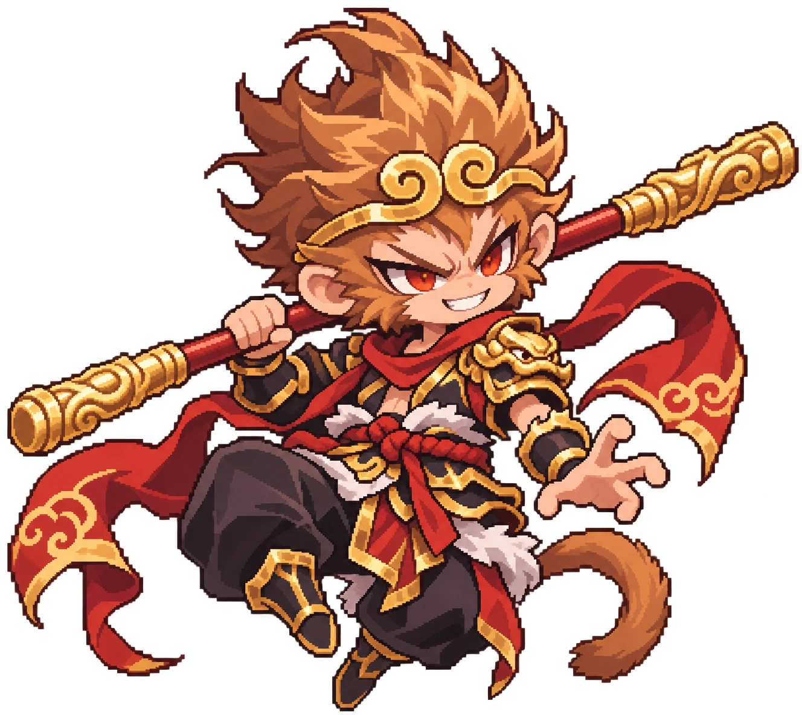

🏛️ ตัวละครใหม่: วีรชน (ทอง) + เทพ (รุ้ง)
วิธีใช้
ChatGPT: แชตใหม่ทีละตัว แนบรูปตัวอย่างสไตล์ (กดค้างที่รูปแล้วบันทึก) แล้ววางคำสั่งของตัวนั้น · Codex ที่ต่อโปรเจกต์ไว้: พิมพ์ Read docs/codex/legends/PROMPT.md and make all 12 pictures. Follow AGENTS.md. · ⬇ zip ทั้งชุด

⬆ รูปตัวอย่างสไตล์ (แนบทุกครั้ง)
1. ลิโป้ · Lu Bu
🥇 วีรชน ระดับทอง · คลาส นักรบ · บันทึกเป็น hero_warrior.png
The attached picture is the STYLE EXAMPLE (a chibi Sun Wukong). Copy its art style exactly: chibi proportions with a big head (about 40-45% of the height), crisp clean pixel art on one even grid, a bold dark outline, rich clean shading, smooth tidy shapes with no noise, lots of fine gold ornament, cloth and scarves that flow with motion, a fierce expressive face with big bright eyes, plain white background. Copy only the style of the example, NOT its monkey features, colours or staff. Draw Lu Bu (the mightiest warrior of the Three Kingdoms, a young man) as a chibi pixel-art game character. Class: warrior (heavy hitter, smashes groups). GOLD tier = HERO: a legendary human, real armour and clothes, impressive but earthly. Face: long black hair flowing out of the helmet, sharp red-brown eyes, a fierce proud smirk. Both eyes bright and clearly visible, no hair over the eyes. Head: a tall golden crown-helmet with two VERY long pheasant tail feathers (white with dark bands) sweeping up and back, a red tassel on top. Body: heavy dark crimson and black lamellar armour with gold trims, big shoulder guards, a gold tiger-face belt buckle, armoured boots. Back: a long red cape and red sash ends flowing behind him. Weapon: a huge halberd "Sky Piercer": a long red shaft, a spear tip with a crescent blade on each side, a red tassel under the blade, held in his fist. Pose: three-quarter view facing RIGHT, a wide battle stance, the halberd held across his body ready to sweep. Both feet on the ground (the characters stand on tiles in the game), with the energy and flowing cloth of the example. Must read as Lu Bu at a glance: the two huge pheasant feathers and the crescent halberd. Original design: do not copy any existing game, film, anime or comic version of Lu Bu (for example no Marvel, Dragon Ball or Black Myth look). Colours (dark / mid / light): crimson #5e0f14 / #9a1c22 / #d63a3a; black armour #16131a / #2c2632 / #4a4250; gold #8a5a12 / #d8a22a / #ffe07a; feathers #f2ead8 / #6a5040. Square canvas, plain pure white background with nothing else, the character centred, full body from the top of the head gear to the feet, filling about 85-90% of the height. No aura or glow round the body, no effects, no sparkles, no ground, no shadow, no text, no watermark.
2. ฮัตโตริ ฮันโซ · Hattori Hanzo
🥇 วีรชน ระดับทอง · คลาส นักฆ่า · บันทึกเป็น hero_assassin.png
The attached picture is the STYLE EXAMPLE (a chibi Sun Wukong). Copy its art style exactly: chibi proportions with a big head (about 40-45% of the height), crisp clean pixel art on one even grid, a bold dark outline, rich clean shading, smooth tidy shapes with no noise, lots of fine gold ornament, cloth and scarves that flow with motion, a fierce expressive face with big bright eyes, plain white background. Copy only the style of the example, NOT its monkey features, colours or staff. Draw Hattori Hanzo (the legendary ninja master of Iga, a young man) as a chibi pixel-art game character. Class: assassin (fast critical strikes). GOLD tier = HERO: a legendary human, real armour and clothes, impressive but earthly. Face: short spiky dark hair, sharp steel-grey eyes, a cool confident half-smile. Both eyes bright and clearly visible, no hair over the eyes. Head: a dark indigo ninja hood with a steel forehead plate engraved with a crest, the face mask pulled DOWN to the neck so the whole face shows. Body: fitted dark indigo ninja garb with dark steel arm guards and shin guards, a crimson sash belt, wrapped hands, split-toe boots. Back: a long crimson scarf flowing behind him. Weapon: two short straight blades (tanto) in a REVERSE GRIP: a small ring or guard on top of each fist, the blade coming out of the BOTTOM of the fist and pointing back along the forearm. Pose: three-quarter view facing RIGHT, a low ready stance, one blade forward at chest height, the other held back by his hip. Both feet on the ground (the characters stand on tiles in the game), with the energy and flowing cloth of the example. Must read as Hattori Hanzo at a glance: the ninja hood with the steel forehead plate and the flowing crimson scarf. Original design: do not copy any existing game, film, anime or comic version of Hattori Hanzo (for example no Marvel, Dragon Ball or Black Myth look). Colours (dark / mid / light): indigo #141a33 / #232c55 / #3a4880; steel #4a5060 / #8a92a6 / #d8dde8; crimson #7a1018 / #c42a30 / #ff6a5a; gold accents #c8962a / #ffd36a. Square canvas, plain pure white background with nothing else, the character centred, full body from the top of the head gear to the feet, filling about 85-90% of the height. No aura or glow round the body, no effects, no sparkles, no ground, no shadow, no text, no watermark.
3. โรบินฮู้ด · Robin Hood
🥇 วีรชน ระดับทอง · คลาส นักธนู · บันทึกเป็น hero_hunter.png
The attached picture is the STYLE EXAMPLE (a chibi Sun Wukong). Copy its art style exactly: chibi proportions with a big head (about 40-45% of the height), crisp clean pixel art on one even grid, a bold dark outline, rich clean shading, smooth tidy shapes with no noise, lots of fine gold ornament, cloth and scarves that flow with motion, a fierce expressive face with big bright eyes, plain white background. Copy only the style of the example, NOT its monkey features, colours or staff. Draw Robin Hood (the outlaw archer of Sherwood Forest, a young man) as a chibi pixel-art game character. Class: archer (long range, piercing arrows). GOLD tier = HERO: a legendary human, real armour and clothes, impressive but earthly. Face: messy auburn hair, bright green eyes, a cheeky confident grin. Both eyes bright and clearly visible, no hair over the eyes. Head: a forest-green hooded cap with a long red feather tucked in it. Body: a brown leather jerkin over a green tunic, leather bracers with gold rims, a belt with pouches and a gold buckle, a quiver of arrows on his back, soft leather boots. Back: a short forest-green hooded cape with a ragged edge flowing behind him. Weapon: a tall yew longbow with green wraps on the grip, an arrow ready on the string, held in his front fist. Pose: three-quarter view facing RIGHT, a confident stance, the bow held forward and slightly raised. Both feet on the ground (the characters stand on tiles in the game), with the energy and flowing cloth of the example. Must read as Robin Hood at a glance: the green feathered cap, the longbow and the quiver. Original design: do not copy any existing game, film, anime or comic version of Robin Hood (for example no Marvel, Dragon Ball or Black Myth look). Colours (dark / mid / light): forest green #173a1e / #2e6a32 / #5aa24e; leather #3a2414 / #6e4628 / #a87448; red feather #a01e1e / #e04a3a; gold #b8862a / #ffd36a. Square canvas, plain pure white background with nothing else, the character centred, full body from the top of the head gear to the feet, filling about 85-90% of the height. No aura or glow round the body, no effects, no sparkles, no ground, no shadow, no text, no watermark.
4. เมอร์ลิน · Merlin
🥇 วีรชน ระดับทอง · คลาส นักเวท · บันทึกเป็น hero_mage.png
The attached picture is the STYLE EXAMPLE (a chibi Sun Wukong). Copy its art style exactly: chibi proportions with a big head (about 40-45% of the height), crisp clean pixel art on one even grid, a bold dark outline, rich clean shading, smooth tidy shapes with no noise, lots of fine gold ornament, cloth and scarves that flow with motion, a fierce expressive face with big bright eyes, plain white background. Copy only the style of the example, NOT its monkey features, colours or staff. Draw Merlin (the great wizard of King Arthur's court, a cheerful old man) as a chibi pixel-art game character. Class: mage (spells that hit areas). GOLD tier = HERO: a legendary human, real armour and clothes, impressive but earthly. Face: a long fluffy white beard, bushy white eyebrows, bright blue eyes, a wise knowing smile. Both eyes bright and clearly visible, no hair over the eyes. Head: a tall floppy pointed wizard hat, deep blue with silver stars and crescent moons. Body: a deep blue wizard robe with silver star embroidery and a wide belt with a silver moon buckle, wide sleeves, curled pointed shoes. Back: a long midnight-blue cloak with silver edges flowing behind him. Weapon: a tall gnarled wooden staff topped with a big glowing cyan crystal held in its roots, gripped in his fist. Pose: three-quarter view facing RIGHT, standing proudly, the staff planted beside him, the free hand raised with fingers open as if casting. Both feet on the ground (the characters stand on tiles in the game), with the energy and flowing cloth of the example. Must read as Merlin at a glance: the starry pointed hat, the long white beard and the crystal staff. Original design: do not copy any existing game, film, anime or comic version of Merlin (for example no Marvel, Dragon Ball or Black Myth look). Colours (dark / mid / light): royal blue #141c4a / #24357a / #3f5cbc; silver #8a90a8 / #d6dbe8 / #ffffff; beard #d8d6e0 / #ffffff; crystal #1a9ab8 / #5ae0ff / #d6faff. Square canvas, plain pure white background with nothing else, the character centred, full body from the top of the head gear to the feet, filling about 85-90% of the height. No aura or glow round the body, no effects, no sparkles, no ground, no shadow, no text, no watermark.
5. ขงเบ้ง · Zhuge Liang (Kongming)
🥇 วีรชน ระดับทอง · คลาส ซัพพอร์ต · บันทึกเป็น hero_support.png
The attached picture is the STYLE EXAMPLE (a chibi Sun Wukong). Copy its art style exactly: chibi proportions with a big head (about 40-45% of the height), crisp clean pixel art on one even grid, a bold dark outline, rich clean shading, smooth tidy shapes with no noise, lots of fine gold ornament, cloth and scarves that flow with motion, a fierce expressive face with big bright eyes, plain white background. Copy only the style of the example, NOT its monkey features, colours or staff. Draw Zhuge Liang (Kongming) (the genius strategist of the Three Kingdoms, a young man) as a chibi pixel-art game character. Class: support (heals and buffs allies). GOLD tier = HERO: a legendary human, real armour and clothes, impressive but earthly. Face: long straight black hair, calm dark eyes, a calm gentle smile. Both eyes bright and clearly visible, no hair over the eyes. Head: a black scholar's cap (guan) tied with ribbons. Body: flowing white and sky-blue Han scholar robes with cloud patterns and gold trims, wide sleeves, a black sash with a jade pendant, cloth shoes. Back: long white robe tails and blue ribbons flowing behind him. Weapon: the iconic white crane-feather fan held up in his fist. Pose: three-quarter view facing RIGHT, a relaxed elegant stance, the feather fan raised in front of him, the other hand behind his back. Both feet on the ground (the characters stand on tiles in the game), with the energy and flowing cloth of the example. Must read as Zhuge Liang (Kongming) at a glance: the white feather fan and the black scholar cap. Original design: do not copy any existing game, film, anime or comic version of Zhuge Liang (Kongming) (for example no Marvel, Dragon Ball or Black Myth look). Colours (dark / mid / light): white robe #c8ccd8 / #e8ecf4 / #ffffff; sky blue #2a5a8a / #4a8ac8 / #9ad0ff; black #141418 / #2a2a33; gold and jade #c8962a / #ffd36a / #3aa87a. Square canvas, plain pure white background with nothing else, the character centred, full body from the top of the head gear to the feet, filling about 85-90% of the height. No aura or glow round the body, no effects, no sparkles, no ground, no shadow, no text, no watermark.
6. คลีโอพัตรา · Cleopatra
🥇 วีรชน ระดับทอง · คลาส สาปแช่ง · บันทึกเป็น hero_curse.png
The attached picture is the STYLE EXAMPLE (a chibi Sun Wukong). Copy its art style exactly: chibi proportions with a big head (about 40-45% of the height), crisp clean pixel art on one even grid, a bold dark outline, rich clean shading, smooth tidy shapes with no noise, lots of fine gold ornament, cloth and scarves that flow with motion, a fierce expressive face with big bright eyes, plain white background. Copy only the style of the example, NOT its monkey features, colours or staff. Draw Cleopatra (the last queen of ancient Egypt, a young woman) as a chibi pixel-art game character. Class: curse caster (poison and weakening). GOLD tier = HERO: a legendary human, real armour and clothes, impressive but earthly. Face: a straight black bob with blunt bangs, bold kohl eyeliner, bright amber eyes, a mysterious confident smile. Both eyes bright and clearly visible, no hair over the eyes. Head: a golden crown with a rearing cobra (uraeus) on the front and gold and lapis stripes. Body: a wide gold and lapis-blue collar (usekh), a white linen dress with a gold belt, gold arm cuffs and bracelets, gold sandals. Back: a long deep purple cape with gold edges flowing behind her. Weapon: a golden cobra scepter: a staff topped with a rearing cobra head with glowing emerald eyes, held in her fist. Pose: three-quarter view facing RIGHT, an elegant regal stance, the cobra scepter held forward. Both feet on the ground (the characters stand on tiles in the game), with the energy and flowing cloth of the example. Must read as Cleopatra at a glance: the cobra crown, the black bob and the gold collar. Original design: do not copy any existing game, film, anime or comic version of Cleopatra (for example no Marvel, Dragon Ball or Black Myth look). Colours (dark / mid / light): gold #8a5a12 / #d8a22a / #ffe07a; lapis blue #142a6a / #2a4aa8 / #5a82e0; white linen #d8d2c0 / #f6f2e6; purple and emerald #3a1650 / #6a2a8a / #2ad07a. Square canvas, plain pure white background with nothing else, the character centred, full body from the top of the head gear to the feet, filling about 85-90% of the height. No aura or glow round the body, no effects, no sparkles, no ground, no shadow, no text, no watermark.
7. ซุนหงอคง · Sun Wukong
🌈 เทพ ระดับรุ้ง · คลาส นักรบ · บันทึกเป็น god_warrior.png
The attached picture is the STYLE EXAMPLE (a chibi Sun Wukong). Copy its art style exactly: chibi proportions with a big head (about 40-45% of the height), crisp clean pixel art on one even grid, a bold dark outline, rich clean shading, smooth tidy shapes with no noise, lots of fine gold ornament, cloth and scarves that flow with motion, a fierce expressive face with big bright eyes, plain white background. This IS the character in the style example: keep his design, colours and staff exactly, only redraw him STANDING on the ground in a battle stance. Draw Sun Wukong (the Monkey King, the Great Sage Equal to Heaven) as a chibi pixel-art game character. Class: warrior (heavy hitter, smashes groups). RAINBOW tier = GOD: divine and the most impressive of all, extra gold ornament and small glowing divine details that are PART of the costume (runes, moon, sun, eyes). Face: a monkey face with golden-brown fur, wild spiky golden-brown hair, fierce red eyes, round monkey ears, a fierce toothy grin. Both eyes bright and clearly visible, no hair over the eyes. Head: a golden circlet with cloud swirls on his forehead (exactly like the style example). Body: black and gold armour with a gold dragon shoulder guard, a red rope sash with white fur trim, black baggy trousers, black and gold boots. Back: long red scarves with gold cloud patterns flowing behind him, a curling monkey tail. Weapon: the Ruyi Jingu Bang: a red staff with ornate gold ends, resting on his shoulder in his fist. Pose: three-quarter view facing RIGHT, a wide battle stance, the staff on his shoulder, the free hand open like a claw (same character as the example, now standing on the ground). Both feet on the ground (the characters stand on tiles in the game), with the energy and flowing cloth of the example. Must read as Sun Wukong at a glance: the golden circlet, the monkey tail and the red-and-gold staff. Original design: do not copy any existing game, film, anime or comic version of Sun Wukong (for example no Marvel, Dragon Ball or Black Myth look). Colours (dark / mid / light): fur #6a3a1a / #a8642a / #e0a050; red #7a1018 / #c42a30 / #ff6a5a; black #16131a / #2c2632; gold #8a5a12 / #d8a22a / #ffe07a. Square canvas, plain pure white background with nothing else, the character centred, full body from the top of the head gear to the feet, filling about 85-90% of the height. No aura or glow round the body, no effects, no sparkles, no ground, no shadow, no text, no watermark.
8. โลกิ · Loki
🌈 เทพ ระดับรุ้ง · คลาส นักฆ่า · บันทึกเป็น god_assassin.png
The attached picture is the STYLE EXAMPLE (a chibi Sun Wukong). Copy its art style exactly: chibi proportions with a big head (about 40-45% of the height), crisp clean pixel art on one even grid, a bold dark outline, rich clean shading, smooth tidy shapes with no noise, lots of fine gold ornament, cloth and scarves that flow with motion, a fierce expressive face with big bright eyes, plain white background. Copy only the style of the example, NOT its monkey features, colours or staff. Draw Loki (the Norse trickster god born of fire, a young man) as a chibi pixel-art game character. Class: assassin (fast critical strikes). RAINBOW tier = GOD: divine and the most impressive of all, extra gold ornament and small glowing divine details that are PART of the costume (runes, moon, sun, eyes). Face: wild flame-red hair, sly emerald-green eyes, a sly mischievous grin. Both eyes bright and clearly visible, no hair over the eyes. Head: a black leather hood with a serpent-scale pattern pushed back so the flame-red hair spills out, a thin gold circlet shaped like a snake biting its tail on the forehead. Body: black and deep purple leather armour with gold serpent knotwork, a high collar, gold bracers shaped like coiled snakes, slim black boots; faint glowing emerald runes on the armour. Back: a long dark purple cape with a ragged edge and an emerald lining flowing behind him. Weapon: two curved daggers shaped like white serpent fangs with gold hilts, in a REVERSE GRIP: a ring on top of each fist, the blade coming out of the BOTTOM of the fist and curving back toward the body. Pose: three-quarter view facing RIGHT, a low sly stance, one fang dagger forward, the other held back. Both feet on the ground (the characters stand on tiles in the game), with the energy and flowing cloth of the example. Must read as Loki at a glance: the flame-red hair under the serpent hood and the fang daggers. Original design: do not copy any existing game, film, anime or comic version of Loki (for example no Marvel, Dragon Ball or Black Myth look). Colours (dark / mid / light): black and purple #121216 / #2a1a3a / #4a2a6a; flame hair #8a1a0a / #e0441a / #ffa040; gold #8a5a12 / #d8a22a / #ffe07a; emerald #0e5a3a / #1ab874 / #8affc8. Square canvas, plain pure white background with nothing else, the character centred, full body from the top of the head gear to the feet, filling about 85-90% of the height. No aura or glow round the body, no effects, no sparkles, no ground, no shadow, no text, no watermark.
9. อาร์เทมิส · Artemis
🌈 เทพ ระดับรุ้ง · คลาส นักธนู · บันทึกเป็น god_hunter.png
The attached picture is the STYLE EXAMPLE (a chibi Sun Wukong). Copy its art style exactly: chibi proportions with a big head (about 40-45% of the height), crisp clean pixel art on one even grid, a bold dark outline, rich clean shading, smooth tidy shapes with no noise, lots of fine gold ornament, cloth and scarves that flow with motion, a fierce expressive face with big bright eyes, plain white background. Copy only the style of the example, NOT its monkey features, colours or staff. Draw Artemis (the Greek goddess of the hunt and the moon, a young woman) as a chibi pixel-art game character. Class: archer (long range, piercing arrows). RAINBOW tier = GOD: divine and the most impressive of all, extra gold ornament and small glowing divine details that are PART of the costume (runes, moon, sun, eyes). Face: long silver-white hair in a high ponytail, bright silver-blue eyes, a determined confident smile. Both eyes bright and clearly visible, no hair over the eyes. Head: a silver crescent-moon tiara glowing softly on her forehead. Body: a short white Greek chiton with silver armour pieces (chest plate with a moon emblem, shoulder guard, bracers), a silver belt, laced silver sandals up the calves. Back: a light pale-blue cloak flowing behind her, a quiver of silver-fletched arrows on her back. Weapon: a silver bow shaped like a crescent moon with a glowing pale-blue string, an arrow ready, held in her front fist. Pose: three-quarter view facing RIGHT, a poised hunter stance, the bow held forward. Both feet on the ground (the characters stand on tiles in the game), with the energy and flowing cloth of the example. Must read as Artemis at a glance: the crescent-moon tiara and the crescent-moon bow. Original design: do not copy any existing game, film, anime or comic version of Artemis (for example no Marvel, Dragon Ball or Black Myth look). Colours (dark / mid / light): silver #6a7088 / #b8c0d6 / #f2f6ff; white #d6dae6 / #ffffff; pale blue #3a6aa8 / #7ab0e8 / #c8e6ff; moon gold #c8a24a / #ffe6a0. Square canvas, plain pure white background with nothing else, the character centred, full body from the top of the head gear to the feet, filling about 85-90% of the height. No aura or glow round the body, no effects, no sparkles, no ground, no shadow, no text, no watermark.
10. โอดิน · Odin
🌈 เทพ ระดับรุ้ง · คลาส นักเวท · บันทึกเป็น god_mage.png
The attached picture is the STYLE EXAMPLE (a chibi Sun Wukong). Copy its art style exactly: chibi proportions with a big head (about 40-45% of the height), crisp clean pixel art on one even grid, a bold dark outline, rich clean shading, smooth tidy shapes with no noise, lots of fine gold ornament, cloth and scarves that flow with motion, a fierce expressive face with big bright eyes, plain white background. Copy only the style of the example, NOT its monkey features, colours or staff. Draw Odin (the Allfather, king of the Norse gods, an old man) as a chibi pixel-art game character. Class: mage (spells that hit areas). RAINBOW tier = GOD: divine and the most impressive of all, extra gold ornament and small glowing divine details that are PART of the costume (runes, moon, sun, eyes). Face: a long braided white beard, an eye patch over his left eye, a bright blue right eye, a stern wise look. Both eyes bright and clearly visible (Odin's eye patch is the one exception), no hair over the eyes. Head: a golden helmet with two white wings on the sides. Body: steel-blue armour with gold trims and Norse knotwork, a grey wolf-fur mantle over the shoulders, a wide belt with a gold buckle, fur-topped boots; two small black ravens perched on his shoulders. Back: a long steel-blue cloak flowing behind him. Weapon: the spear Gungnir: a long gold-and-steel spear with glowing blue runes along the blade, held in his fist. Pose: three-quarter view facing RIGHT, a commanding stance, the spear held upright, the free hand raised with glowing runes floating close to the palm. Both feet on the ground (the characters stand on tiles in the game), with the energy and flowing cloth of the example. Must read as Odin at a glance: the winged helmet, the eye patch, the ravens and the rune spear. Original design: do not copy any existing game, film, anime or comic version of Odin (for example no Marvel, Dragon Ball or Black Myth look). Colours (dark / mid / light): steel blue #1a2a44 / #34507a / #6a8ab8; grey fur #5a5a62 / #9a9aa6 / #d6d6de; gold #8a5a12 / #d8a22a / #ffe07a; rune glow #3ac8ff / #c8f2ff. Square canvas, plain pure white background with nothing else, the character centred, full body from the top of the head gear to the feet, filling about 85-90% of the height. No aura or glow round the body, no effects, no sparkles, no ground, no shadow, no text, no watermark.
11. อพอลโล · Apollo
🌈 เทพ ระดับรุ้ง · คลาส ซัพพอร์ต · บันทึกเป็น god_support.png
The attached picture is the STYLE EXAMPLE (a chibi Sun Wukong). Copy its art style exactly: chibi proportions with a big head (about 40-45% of the height), crisp clean pixel art on one even grid, a bold dark outline, rich clean shading, smooth tidy shapes with no noise, lots of fine gold ornament, cloth and scarves that flow with motion, a fierce expressive face with big bright eyes, plain white background. Copy only the style of the example, NOT its monkey features, colours or staff. Draw Apollo (the Greek god of the sun, music and healing, a young man) as a chibi pixel-art game character. Class: support (heals and buffs allies). RAINBOW tier = GOD: divine and the most impressive of all, extra gold ornament and small glowing divine details that are PART of the costume (runes, moon, sun, eyes). Face: curly golden-blond hair, warm golden eyes, a warm bright smile. Both eyes bright and clearly visible, no hair over the eyes. Head: a golden laurel wreath. Body: a white toga-style chiton with gold sun embroidery, a gold chest plate with a sun disc emblem, gold arm cuffs, laced gold sandals. Back: a flowing orange-gold cape like sunset light. Weapon: a golden lyre with glowing strings held in one arm, the other hand plucking it. Pose: three-quarter view facing RIGHT, a cheerful stance, the lyre held up in front of him. Both feet on the ground (the characters stand on tiles in the game), with the energy and flowing cloth of the example. Must read as Apollo at a glance: the laurel wreath, the sun emblem and the golden lyre. Original design: do not copy any existing game, film, anime or comic version of Apollo (for example no Marvel, Dragon Ball or Black Myth look). Colours (dark / mid / light): white #d6dae6 / #ffffff; gold #8a5a12 / #d8a22a / #ffe07a; sun orange #c8501a / #ff8a2a / #ffc86a; hair #c8902a / #ffd060 / #fff0a8. Square canvas, plain pure white background with nothing else, the character centred, full body from the top of the head gear to the feet, filling about 85-90% of the height. No aura or glow round the body, no effects, no sparkles, no ground, no shadow, no text, no watermark.
12. อนูบิส · Anubis
🌈 เทพ ระดับรุ้ง · คลาส สาปแช่ง · บันทึกเป็น god_curse.png
The attached picture is the STYLE EXAMPLE (a chibi Sun Wukong). Copy its art style exactly: chibi proportions with a big head (about 40-45% of the height), crisp clean pixel art on one even grid, a bold dark outline, rich clean shading, smooth tidy shapes with no noise, lots of fine gold ornament, cloth and scarves that flow with motion, a fierce expressive face with big bright eyes, plain white background. Copy only the style of the example, NOT its monkey features, colours or staff. Draw Anubis (the jackal-headed Egyptian god of the dead) as a chibi pixel-art game character. Class: curse caster (poison and weakening). RAINBOW tier = GOD: divine and the most impressive of all, extra gold ornament and small glowing divine details that are PART of the costume (runes, moon, sun, eyes). Face: a black jackal head with tall pointed ears, glowing teal eyes, a calm stern look. Both eyes bright and clearly visible, no hair over the eyes. Head: a gold and lapis striped headdress (nemes) behind the jackal ears. Body: a dark-skinned body with a wide gold and lapis collar, gold arm bands, a white linen kilt with a gold belt and an ankh hanging from it, gold sandals. Back: a long black cape with gold edges flowing behind him. Weapon: a was-sceptre: a tall dark staff topped with a stylised jackal head and forked at the bottom, held in his fist. Pose: three-quarter view facing RIGHT, a solemn guardian stance, the sceptre planted beside him, the free hand raised with an open palm. Both feet on the ground (the characters stand on tiles in the game), with the energy and flowing cloth of the example. Must read as Anubis at a glance: the jackal head with tall ears and the striped headdress. Original design: do not copy any existing game, film, anime or comic version of Anubis (for example no Marvel, Dragon Ball or Black Myth look). Colours (dark / mid / light): black #0e0e14 / #22222c / #3a3a48; gold #8a5a12 / #d8a22a / #ffe07a; lapis #142a6a / #2a4aa8 / #5a82e0; teal glow #1ac8b8 / #9affee. Square canvas, plain pure white background with nothing else, the character centred, full body from the top of the head gear to the feet, filling about 85-90% of the height. No aura or glow round the body, no effects, no sparkles, no ground, no shadow, no text, no watermark.
13. ซุนหงอคง ท่าโจมตี (รูปเดียว)
กระโดด ยืดกระบองยาว เตรียมฟาด · แนบรูปตัวอย่างสไตล์ · บันทึกเป็น god_warrior_attack.png
The attached picture is the STYLE EXAMPLE (a chibi Sun Wukong). Copy its art style exactly: chibi proportions with a big head (about 40-45% of the height), crisp clean pixel art on one even grid, a bold dark outline, rich clean shading, smooth tidy shapes with no noise, lots of fine gold ornament, cloth and scarves that flow with motion, a fierce expressive face with big bright eyes, plain white background. This IS the character in the style example: keep his design, colours and staff exactly. Draw Sun Wukong (the Monkey King) in his ATTACK pose, same chibi pixel art: he has leapt high into the air and holds the Ruyi Jingu Bang high over his head in both fists, ready to smash down to the right. The magic staff has GROWN very long (about three times its normal length), the red shaft with ornate gold ends stretching far up and forward, slightly curved by the swing. His knees are tucked, the red scarves and his tail whip up behind him, a fierce toothy shout on his face. Three-quarter view facing RIGHT. Original design: do not copy any existing game, film or anime version of Sun Wukong. Square canvas, plain pure white background with nothing else, the whole character and the whole staff inside the picture. No aura, no glow round the body, no speed lines, no effects, no ground, no shadow, no text.
14. ซุนหงอคง ภาพเคลื่อนไหว (Codex + สกิล)
ย่อ กระโดด กระบองยืด ฟาดลงพื้น กลับท่า · แนบรูปซุนหงอคงที่เจนเสร็จแล้ว
Use $game-character-sprites. Reference: the attached picture (Sun Wukong, the Monkey King, chibi pixel art). Keep the exact same character, face, outfit, colours and staff in every frame. Scope: cell 128x128 only. One direction only: east (facing right, the same view as the reference). Actions: idle (4 frames) and attack (6 frames). No walk, no other directions. Idle: standing battle stance with the staff on his shoulder, gentle breathing, the feet do not move. Attack, 6 frames: 1. standing battle stance with the staff on his shoulder 2. crouch low, gripping the staff in both fists 3. leap up high, the staff raised over his head 4. at the top of the jump the magic staff GROWS very long, stretching far up and forward 5. smash: he swings the long staff down to the ground in front of him (to the right) and lands 6. the staff shrinks back to normal and he returns to the standing stance Keep the whole body and the whole long staff inside the frame (the long staff may reach the frame edge in frames 4-5). Keep both feet on the same ground line in frames 1, 2, 5 and 6. No detached effects, no dust, no shadows, transparent background. When done, zip the whole run folder (including the full-size raw images in source/ and generated/, the clean sheets and the GIF previews) plus one large preview picture of both rows. Do not shrink anything.
🎬 ท่า 1. ซุนหงอคง · Sun Wukong ✅ ได้แล้ว
ยืน 4 · โจมตี 6 · สกิล "Cloud Somersault smash (ตีลังกาเมฆ)" 6 · แนบรูปของตัวนี้ (art/incoming/legends/god_warrior.png) · ปุ่มบน = หันขวาทิศเดียว (ซ้ายเกมกลับด้านให้) · ปุ่มล่าง = 4 ทิศ
Use $game-character-sprites. Reference: the attached picture (chibi Sun Wukong with the red-and-gold staff). It is the final design: keep the exact same character, face, hair, outfit, colours, weapon and level of detail in every frame. Scope: ONE direction only: east (facing right, the same three-quarter view as the reference). Actions: idle (4 frames), attack (6 frames) and skill (6 frames). No walk, no other directions. Cell 128x128 for the clean sheets. Idle (4 frames, a smooth loop that ends where it starts): wide battle stance, the staff resting on his shoulder, gentle breathing, the tail curls and the scarves sway. Attack (6 frames) - staff combo: 1. battle stance, staff on the shoulder 2. swing the staff back behind him in both fists 3. a big horizontal sweep to the right, the body twisting 4. follow-through, the staff fully extended in front 5. twirl the staff once in front of him 6. back to the stance, staff on the shoulder Skill (6 frames) - Cloud Somersault smash (ตีลังกาเมฆ), the ultimate (in the game it leaps onto groups of demons and smashes them, the magic staff growing very long): 1. battle stance, staff on the shoulder 2. crouch low gripping the staff in both fists 3. leap up high, the staff raised over his head 4. at the top of the jump the magic staff GROWS very long, stretching far up and forward 5. smash: he swings the long staff down to the ground in front of him and lands 6. the staff shrinks back to normal and he returns to the stance Only in skill frames 4-5 the grown staff may run past the frame edge; his body stays inside. In every other frame the staff is its normal length, as in the reference. SAME SCALE IN ALL THREE ROWS: the character is exactly the same height in idle, attack and skill (do not draw the idle row bigger), the same as in the reference. Smooth animation: every frame is a small step from the one before; the same size, proportions and outline in every frame; both feet on the same ground line unless a step says jump; hair, cape and cloth follow through and settle. Keep the whole body, weapon and cape inside every frame. No detached effects (no flying projectiles, slash trails, magic bolts, sparks, dust or shadows): the game draws those. Parts of the costume or weapon that already glow may glow brighter. Transparent background. When done, zip the whole run folder including the full-size raw images in source/ and generated/, the clean sheets and the GIF previews, plus one large preview picture of all three rows. Do not shrink anything.
4 ทิศ: ล่าง (หันหน้าหาจอ) · ขวา · บน (หันหลัง) · ซ้าย = เกมกลับด้านจากขวาเอง · งานเยอะขึ้น 3 เท่า
Use $game-character-sprites. Reference: the attached picture (chibi Sun Wukong with the red-and-gold staff). It is the final design: keep the exact same character, face, hair, outfit, colours, weapon and level of detail in every frame. Scope: 3 directions, in this order: south (facing the viewer), east (facing right, the same three-quarter view as the reference), north (back to the viewer). Do NOT make west: the game mirrors east to get west. Actions for EACH direction: idle (4 frames), attack (6 frames) and skill (6 frames). No walk. Cell 128x128 for the clean sheets. The reference shows the east view. For south and north, turn the same character to face that way and keep every part of the costume and weapon the same. The steps below are the same beats in every direction, aimed the way that direction faces (south = toward the viewer, north = away from the viewer, east = right). Idle (4 frames, a smooth loop that ends where it starts): wide battle stance, the staff resting on his shoulder, gentle breathing, the tail curls and the scarves sway. Attack (6 frames) - staff combo: 1. battle stance, staff on the shoulder 2. swing the staff back behind him in both fists 3. a big horizontal sweep to the right, the body twisting 4. follow-through, the staff fully extended in front 5. twirl the staff once in front of him 6. back to the stance, staff on the shoulder Skill (6 frames) - Cloud Somersault smash (ตีลังกาเมฆ), the ultimate (in the game it leaps onto groups of demons and smashes them, the magic staff growing very long): 1. battle stance, staff on the shoulder 2. crouch low gripping the staff in both fists 3. leap up high, the staff raised over his head 4. at the top of the jump the magic staff GROWS very long, stretching far up and forward 5. smash: he swings the long staff down to the ground in front of him and lands 6. the staff shrinks back to normal and he returns to the stance Only in skill frames 4-5 the grown staff may run past the frame edge; his body stays inside. In every other frame the staff is its normal length, as in the reference. SAME SCALE IN EVERY ROW AND DIRECTION: the character is exactly the same height in idle, attack and skill in south, east and north (do not draw the idle rows bigger), the same as in the reference. Smooth animation: every frame is a small step from the one before; the same size, proportions and outline in every frame; both feet on the same ground line unless a step says jump; hair, cape and cloth follow through and settle. Keep the whole body, weapon and cape inside every frame. No detached effects (no flying projectiles, slash trails, magic bolts, sparks, dust or shadows): the game draws those. Parts of the costume or weapon that already glow may glow brighter. Transparent background. When done, zip the whole run folder including the full-size raw images in source/ and generated/, the clean sheets and the GIF previews, plus one large preview picture of all nine rows. Do not shrink anything.
🎬 ท่า 2. โลกิ · Loki ✅ ได้แล้ว
ยืน 4 · โจมตี 6 · สกิล "King of Tricks (ราชันแห่งเล่ห์)" 6 · แนบรูปของตัวนี้ (art/incoming/legends/god_assassin.png) · ปุ่มบน = หันขวาทิศเดียว (ซ้ายเกมกลับด้านให้) · ปุ่มล่าง = 4 ทิศ
Use $game-character-sprites. Reference: the attached picture (chibi Loki with flame-red hair, serpent hood and two fang daggers). It is the final design: keep the exact same character, face, hair, outfit, colours, weapon and level of detail in every frame. Scope: ONE direction only: east (facing right, the same three-quarter view as the reference). Actions: idle (4 frames), attack (6 frames) and skill (6 frames). No walk, no other directions. Cell 128x128 for the clean sheets. Idle (4 frames, a smooth loop that ends where it starts): low sly stance, both fang daggers in a reverse grip, a sly grin, the cape and hair sway, he shifts his weight from foot to foot. Attack (6 frames) - fang cross slash: 1. sly stance, daggers in a reverse grip 2. crouch low, both daggers crossed in front of his chest 3. dash forward, the front foot stepping ahead 4. X slash: both fang daggers slash across in front of him, body stretched forward 5. follow-through, arms crossed past the body, cape flaring 6. hop back to the stance Skill (6 frames) - King of Tricks (ราชันแห่งเล่ห์), the ultimate (in the game it bewitches the strongest demons so they fight each other, then finishes the weak ones): 1. sly stance 2. raises his free hand, the emerald runes on his armour glowing brighter 3. snaps his fingers with a wicked grin, his eyes glowing green 4. spins the fang daggers in his fingers (still in a reverse grip) 5. lunges forward and slashes down hard with both daggers 6. straightens up laughing and returns to the stance Keep the reverse grip in every frame: a ring on top of each fist, the curved blade coming out of the bottom of the fist and curving back toward the body. SAME SCALE IN ALL THREE ROWS: the character is exactly the same height in idle, attack and skill (do not draw the idle row bigger), the same as in the reference. Smooth animation: every frame is a small step from the one before; the same size, proportions and outline in every frame; both feet on the same ground line unless a step says jump; hair, cape and cloth follow through and settle. Keep the whole body, weapon and cape inside every frame. No detached effects (no flying projectiles, slash trails, magic bolts, sparks, dust or shadows): the game draws those. Parts of the costume or weapon that already glow may glow brighter. Transparent background. When done, zip the whole run folder including the full-size raw images in source/ and generated/, the clean sheets and the GIF previews, plus one large preview picture of all three rows. Do not shrink anything.
4 ทิศ: ล่าง (หันหน้าหาจอ) · ขวา · บน (หันหลัง) · ซ้าย = เกมกลับด้านจากขวาเอง · งานเยอะขึ้น 3 เท่า
Use $game-character-sprites. Reference: the attached picture (chibi Loki with flame-red hair, serpent hood and two fang daggers). It is the final design: keep the exact same character, face, hair, outfit, colours, weapon and level of detail in every frame. Scope: 3 directions, in this order: south (facing the viewer), east (facing right, the same three-quarter view as the reference), north (back to the viewer). Do NOT make west: the game mirrors east to get west. Actions for EACH direction: idle (4 frames), attack (6 frames) and skill (6 frames). No walk. Cell 128x128 for the clean sheets. The reference shows the east view. For south and north, turn the same character to face that way and keep every part of the costume and weapon the same. The steps below are the same beats in every direction, aimed the way that direction faces (south = toward the viewer, north = away from the viewer, east = right). Idle (4 frames, a smooth loop that ends where it starts): low sly stance, both fang daggers in a reverse grip, a sly grin, the cape and hair sway, he shifts his weight from foot to foot. Attack (6 frames) - fang cross slash: 1. sly stance, daggers in a reverse grip 2. crouch low, both daggers crossed in front of his chest 3. dash forward, the front foot stepping ahead 4. X slash: both fang daggers slash across in front of him, body stretched forward 5. follow-through, arms crossed past the body, cape flaring 6. hop back to the stance Skill (6 frames) - King of Tricks (ราชันแห่งเล่ห์), the ultimate (in the game it bewitches the strongest demons so they fight each other, then finishes the weak ones): 1. sly stance 2. raises his free hand, the emerald runes on his armour glowing brighter 3. snaps his fingers with a wicked grin, his eyes glowing green 4. spins the fang daggers in his fingers (still in a reverse grip) 5. lunges forward and slashes down hard with both daggers 6. straightens up laughing and returns to the stance Keep the reverse grip in every frame: a ring on top of each fist, the curved blade coming out of the bottom of the fist and curving back toward the body. SAME SCALE IN EVERY ROW AND DIRECTION: the character is exactly the same height in idle, attack and skill in south, east and north (do not draw the idle rows bigger), the same as in the reference. Smooth animation: every frame is a small step from the one before; the same size, proportions and outline in every frame; both feet on the same ground line unless a step says jump; hair, cape and cloth follow through and settle. Keep the whole body, weapon and cape inside every frame. No detached effects (no flying projectiles, slash trails, magic bolts, sparks, dust or shadows): the game draws those. Parts of the costume or weapon that already glow may glow brighter. Transparent background. When done, zip the whole run folder including the full-size raw images in source/ and generated/, the clean sheets and the GIF previews, plus one large preview picture of all nine rows. Do not shrink anything.
🎬 ท่า 3. อาร์เทมิส · Artemis
ยืน 4 · โจมตี 6 · สกิล "Night of the Hunt (ราตรีแห่งการล่า)" 6 · แนบรูปของตัวนี้ (art/incoming/legends/god_hunter.png) · ปุ่มบน = หันขวาทิศเดียว (ซ้ายเกมกลับด้านให้) · ปุ่มล่าง = 4 ทิศ
Use $game-character-sprites. Reference: the attached picture (chibi Artemis with the silver crescent-moon bow). It is the final design: keep the exact same character, face, hair, outfit, colours, weapon and level of detail in every frame. Scope: ONE direction only: east (facing right, the same three-quarter view as the reference). Actions: idle (4 frames), attack (6 frames) and skill (6 frames). No walk, no other directions. Cell 128x128 for the clean sheets. Idle (4 frames, a smooth loop that ends where it starts): poised hunter stance, the bow held forward, the ponytail and pale-blue cloak sway gently. Attack (6 frames) - moon arrow: 1. stance, bow forward, an arrow nocked 2. start drawing the string back 3. full draw: string at her cheek, aiming straight ahead 4. release: the string snaps forward, the arrow is gone, small recoil 5. follow-through, the bow arm still forward 6. reach back to the quiver for the next arrow and return to the stance Skill (6 frames) - Night of the Hunt (ราตรีแห่งการล่า), the ultimate (in the game it marks the five strongest demons with the moon and shoots giant moon arrows at them): 1. stance 2. drop to one knee, pull THREE arrows from the quiver 3. nock all three arrows, the crescent tiara glowing brighter 4. full draw aiming high up and forward 5. release upward (the arrows are gone), the cloak whips back 6. stand up and return to the stance Do not draw flying arrows: the game draws the shots itself. SAME SCALE IN ALL THREE ROWS: the character is exactly the same height in idle, attack and skill (do not draw the idle row bigger), the same as in the reference. Smooth animation: every frame is a small step from the one before; the same size, proportions and outline in every frame; both feet on the same ground line unless a step says jump; hair, cape and cloth follow through and settle. Keep the whole body, weapon and cape inside every frame. No detached effects (no flying projectiles, slash trails, magic bolts, sparks, dust or shadows): the game draws those. Parts of the costume or weapon that already glow may glow brighter. Transparent background. When done, zip the whole run folder including the full-size raw images in source/ and generated/, the clean sheets and the GIF previews, plus one large preview picture of all three rows. Do not shrink anything.
4 ทิศ: ล่าง (หันหน้าหาจอ) · ขวา · บน (หันหลัง) · ซ้าย = เกมกลับด้านจากขวาเอง · งานเยอะขึ้น 3 เท่า
Use $game-character-sprites. Reference: the attached picture (chibi Artemis with the silver crescent-moon bow). It is the final design: keep the exact same character, face, hair, outfit, colours, weapon and level of detail in every frame. Scope: 3 directions, in this order: south (facing the viewer), east (facing right, the same three-quarter view as the reference), north (back to the viewer). Do NOT make west: the game mirrors east to get west. Actions for EACH direction: idle (4 frames), attack (6 frames) and skill (6 frames). No walk. Cell 128x128 for the clean sheets. The reference shows the east view. For south and north, turn the same character to face that way and keep every part of the costume and weapon the same. The steps below are the same beats in every direction, aimed the way that direction faces (south = toward the viewer, north = away from the viewer, east = right). Idle (4 frames, a smooth loop that ends where it starts): poised hunter stance, the bow held forward, the ponytail and pale-blue cloak sway gently. Attack (6 frames) - moon arrow: 1. stance, bow forward, an arrow nocked 2. start drawing the string back 3. full draw: string at her cheek, aiming straight ahead 4. release: the string snaps forward, the arrow is gone, small recoil 5. follow-through, the bow arm still forward 6. reach back to the quiver for the next arrow and return to the stance Skill (6 frames) - Night of the Hunt (ราตรีแห่งการล่า), the ultimate (in the game it marks the five strongest demons with the moon and shoots giant moon arrows at them): 1. stance 2. drop to one knee, pull THREE arrows from the quiver 3. nock all three arrows, the crescent tiara glowing brighter 4. full draw aiming high up and forward 5. release upward (the arrows are gone), the cloak whips back 6. stand up and return to the stance Do not draw flying arrows: the game draws the shots itself. SAME SCALE IN EVERY ROW AND DIRECTION: the character is exactly the same height in idle, attack and skill in south, east and north (do not draw the idle rows bigger), the same as in the reference. Smooth animation: every frame is a small step from the one before; the same size, proportions and outline in every frame; both feet on the same ground line unless a step says jump; hair, cape and cloth follow through and settle. Keep the whole body, weapon and cape inside every frame. No detached effects (no flying projectiles, slash trails, magic bolts, sparks, dust or shadows): the game draws those. Parts of the costume or weapon that already glow may glow brighter. Transparent background. When done, zip the whole run folder including the full-size raw images in source/ and generated/, the clean sheets and the GIF previews, plus one large preview picture of all nine rows. Do not shrink anything.
🎬 ท่า 4. โอดิน · Odin
ยืน 4 · โจมตี 6 · สกิล "Gungnir (หอกกุงเนียร์)" 6 · แนบรูปของตัวนี้ (art/incoming/legends/god_mage.png) · ปุ่มบน = หันขวาทิศเดียว (ซ้ายเกมกลับด้านให้) · ปุ่มล่าง = 4 ทิศ
Use $game-character-sprites. Reference: the attached picture (chibi Odin with the rune spear Gungnir and two ravens). It is the final design: keep the exact same character, face, hair, outfit, colours, weapon and level of detail in every frame. Scope: ONE direction only: east (facing right, the same three-quarter view as the reference). Actions: idle (4 frames), attack (6 frames) and skill (6 frames). No walk, no other directions. Cell 128x128 for the clean sheets. Idle (4 frames, a smooth loop that ends where it starts): commanding stance, the spear upright, the ravens shift on his shoulders, small blue runes float above his open palm, the fur and cloak sway. Attack (6 frames) - rune cast: 1. stance, spear upright, palm open 2. raise the free hand, the runes on the spear blade glow 3. thrust the open palm forward, casting 4. hold the cast, the beard and cloak blown back 5. lower the hand 6. back to the stance Skill (6 frames) - Gungnir (หอกกุงเนียร์), the ultimate (in the game it hurls the spear along the whole road, then freezes every demon in time): 1. stance 2. lift the spear overhead into a throwing grip, the ravens take off from his shoulders 3. lean far back winding up, the runes along the blade blazing 4. throw: his arm whips forward and the spear leaves his hand (no spear in the hand now) 5. follow-through, the cloak flaring forward 6. the spear has flown back into his hand, the ravens land back on his shoulders The small floating runes are part of his pose; no other effects. SAME SCALE IN ALL THREE ROWS: the character is exactly the same height in idle, attack and skill (do not draw the idle row bigger), the same as in the reference. Smooth animation: every frame is a small step from the one before; the same size, proportions and outline in every frame; both feet on the same ground line unless a step says jump; hair, cape and cloth follow through and settle. Keep the whole body, weapon and cape inside every frame. No detached effects (no flying projectiles, slash trails, magic bolts, sparks, dust or shadows): the game draws those. Parts of the costume or weapon that already glow may glow brighter. Transparent background. When done, zip the whole run folder including the full-size raw images in source/ and generated/, the clean sheets and the GIF previews, plus one large preview picture of all three rows. Do not shrink anything.
4 ทิศ: ล่าง (หันหน้าหาจอ) · ขวา · บน (หันหลัง) · ซ้าย = เกมกลับด้านจากขวาเอง · งานเยอะขึ้น 3 เท่า
Use $game-character-sprites. Reference: the attached picture (chibi Odin with the rune spear Gungnir and two ravens). It is the final design: keep the exact same character, face, hair, outfit, colours, weapon and level of detail in every frame. Scope: 3 directions, in this order: south (facing the viewer), east (facing right, the same three-quarter view as the reference), north (back to the viewer). Do NOT make west: the game mirrors east to get west. Actions for EACH direction: idle (4 frames), attack (6 frames) and skill (6 frames). No walk. Cell 128x128 for the clean sheets. The reference shows the east view. For south and north, turn the same character to face that way and keep every part of the costume and weapon the same. The steps below are the same beats in every direction, aimed the way that direction faces (south = toward the viewer, north = away from the viewer, east = right). Idle (4 frames, a smooth loop that ends where it starts): commanding stance, the spear upright, the ravens shift on his shoulders, small blue runes float above his open palm, the fur and cloak sway. Attack (6 frames) - rune cast: 1. stance, spear upright, palm open 2. raise the free hand, the runes on the spear blade glow 3. thrust the open palm forward, casting 4. hold the cast, the beard and cloak blown back 5. lower the hand 6. back to the stance Skill (6 frames) - Gungnir (หอกกุงเนียร์), the ultimate (in the game it hurls the spear along the whole road, then freezes every demon in time): 1. stance 2. lift the spear overhead into a throwing grip, the ravens take off from his shoulders 3. lean far back winding up, the runes along the blade blazing 4. throw: his arm whips forward and the spear leaves his hand (no spear in the hand now) 5. follow-through, the cloak flaring forward 6. the spear has flown back into his hand, the ravens land back on his shoulders The small floating runes are part of his pose; no other effects. SAME SCALE IN EVERY ROW AND DIRECTION: the character is exactly the same height in idle, attack and skill in south, east and north (do not draw the idle rows bigger), the same as in the reference. Smooth animation: every frame is a small step from the one before; the same size, proportions and outline in every frame; both feet on the same ground line unless a step says jump; hair, cape and cloth follow through and settle. Keep the whole body, weapon and cape inside every frame. No detached effects (no flying projectiles, slash trails, magic bolts, sparks, dust or shadows): the game draws those. Parts of the costume or weapon that already glow may glow brighter. Transparent background. When done, zip the whole run folder including the full-size raw images in source/ and generated/, the clean sheets and the GIF previews, plus one large preview picture of all nine rows. Do not shrink anything.
🎬 ท่า 5. อพอลโล · Apollo
ยืน 4 · โจมตี 6 · สกิล "Sun Chariot (รถม้าสุริยะ)" 6 · แนบรูปของตัวนี้ (art/incoming/legends/god_support.png) · ปุ่มบน = หันขวาทิศเดียว (ซ้ายเกมกลับด้านให้) · ปุ่มล่าง = 4 ทิศ
Use $game-character-sprites. Reference: the attached picture (chibi Apollo with the golden lyre). It is the final design: keep the exact same character, face, hair, outfit, colours, weapon and level of detail in every frame. Scope: ONE direction only: east (facing right, the same three-quarter view as the reference). Actions: idle (4 frames), attack (6 frames) and skill (6 frames). No walk, no other directions. Cell 128x128 for the clean sheets. Idle (4 frames, a smooth loop that ends where it starts): cheerful sway, gently plucking the lyre, the curly hair and orange cape bounce. Attack (6 frames) - sun chord: 1. stance, lyre in front 2. raise the lyre 3. strum hard with a big arm sweep, the strings glowing 4. lyre held forward, singing 5. hold, a happy grin 6. back to the stance Skill (6 frames) - Sun Chariot (รถม้าสุริยะ), the ultimate (in the game it makes every unit on the board twice as strong and sets all demons on fire): 1. stance 2. lift the lyre high above his head in both hands 3. the sun emblem on his chest and the lyre glow brightly, the cape billows up 4. bring the lyre down and strum with a huge sweeping arm 5. arms spread wide, head back, singing joyfully 6. back to the stance SAME SCALE IN ALL THREE ROWS: the character is exactly the same height in idle, attack and skill (do not draw the idle row bigger), the same as in the reference. Smooth animation: every frame is a small step from the one before; the same size, proportions and outline in every frame; both feet on the same ground line unless a step says jump; hair, cape and cloth follow through and settle. Keep the whole body, weapon and cape inside every frame. No detached effects (no flying projectiles, slash trails, magic bolts, sparks, dust or shadows): the game draws those. Parts of the costume or weapon that already glow may glow brighter. Transparent background. When done, zip the whole run folder including the full-size raw images in source/ and generated/, the clean sheets and the GIF previews, plus one large preview picture of all three rows. Do not shrink anything.
4 ทิศ: ล่าง (หันหน้าหาจอ) · ขวา · บน (หันหลัง) · ซ้าย = เกมกลับด้านจากขวาเอง · งานเยอะขึ้น 3 เท่า
Use $game-character-sprites. Reference: the attached picture (chibi Apollo with the golden lyre). It is the final design: keep the exact same character, face, hair, outfit, colours, weapon and level of detail in every frame. Scope: 3 directions, in this order: south (facing the viewer), east (facing right, the same three-quarter view as the reference), north (back to the viewer). Do NOT make west: the game mirrors east to get west. Actions for EACH direction: idle (4 frames), attack (6 frames) and skill (6 frames). No walk. Cell 128x128 for the clean sheets. The reference shows the east view. For south and north, turn the same character to face that way and keep every part of the costume and weapon the same. The steps below are the same beats in every direction, aimed the way that direction faces (south = toward the viewer, north = away from the viewer, east = right). Idle (4 frames, a smooth loop that ends where it starts): cheerful sway, gently plucking the lyre, the curly hair and orange cape bounce. Attack (6 frames) - sun chord: 1. stance, lyre in front 2. raise the lyre 3. strum hard with a big arm sweep, the strings glowing 4. lyre held forward, singing 5. hold, a happy grin 6. back to the stance Skill (6 frames) - Sun Chariot (รถม้าสุริยะ), the ultimate (in the game it makes every unit on the board twice as strong and sets all demons on fire): 1. stance 2. lift the lyre high above his head in both hands 3. the sun emblem on his chest and the lyre glow brightly, the cape billows up 4. bring the lyre down and strum with a huge sweeping arm 5. arms spread wide, head back, singing joyfully 6. back to the stance SAME SCALE IN EVERY ROW AND DIRECTION: the character is exactly the same height in idle, attack and skill in south, east and north (do not draw the idle rows bigger), the same as in the reference. Smooth animation: every frame is a small step from the one before; the same size, proportions and outline in every frame; both feet on the same ground line unless a step says jump; hair, cape and cloth follow through and settle. Keep the whole body, weapon and cape inside every frame. No detached effects (no flying projectiles, slash trails, magic bolts, sparks, dust or shadows): the game draws those. Parts of the costume or weapon that already glow may glow brighter. Transparent background. When done, zip the whole run folder including the full-size raw images in source/ and generated/, the clean sheets and the GIF previews, plus one large preview picture of all nine rows. Do not shrink anything.
🎬 ท่า 6. อนูบิส · Anubis
ยืน 4 · โจมตี 6 · สกิล "Judgement of the Duat (พิพากษาแห่งดูอัต)" 6 · แนบรูปของตัวนี้ (art/incoming/legends/god_curse.png) · ปุ่มบน = หันขวาทิศเดียว (ซ้ายเกมกลับด้านให้) · ปุ่มล่าง = 4 ทิศ
Use $game-character-sprites. Reference: the attached picture (chibi Anubis with the was-sceptre and the ankh). It is the final design: keep the exact same character, face, hair, outfit, colours, weapon and level of detail in every frame. Scope: ONE direction only: east (facing right, the same three-quarter view as the reference). Actions: idle (4 frames), attack (6 frames) and skill (6 frames). No walk, no other directions. Cell 128x128 for the clean sheets. Idle (4 frames, a smooth loop that ends where it starts): solemn guardian stance, the sceptre planted, the free hand slowly turning palm up, the cape sways. Attack (6 frames) - sceptre curse: 1. stance, sceptre planted 2. raise the sceptre 3. point the jackal head of the sceptre forward, his eyes glowing teal 4. thrust forward, casting 5. hold the cast 6. plant the sceptre back down, stance Skill (6 frames) - Judgement of the Duat (พิพากษาแห่งดูอัต), the ultimate (in the game it curses every rival gang and sends giant mummies to their houses): 1. stance 2. lift the golden ankh from his belt in the free hand 3. hold the ankh high, the eye emblem and his eyes glowing teal 4. slam the forked end of the sceptre into the ground 5. hold, the cape flaring up behind him 6. back to the stance SAME SCALE IN ALL THREE ROWS: the character is exactly the same height in idle, attack and skill (do not draw the idle row bigger), the same as in the reference. Smooth animation: every frame is a small step from the one before; the same size, proportions and outline in every frame; both feet on the same ground line unless a step says jump; hair, cape and cloth follow through and settle. Keep the whole body, weapon and cape inside every frame. No detached effects (no flying projectiles, slash trails, magic bolts, sparks, dust or shadows): the game draws those. Parts of the costume or weapon that already glow may glow brighter. Transparent background. When done, zip the whole run folder including the full-size raw images in source/ and generated/, the clean sheets and the GIF previews, plus one large preview picture of all three rows. Do not shrink anything.
4 ทิศ: ล่าง (หันหน้าหาจอ) · ขวา · บน (หันหลัง) · ซ้าย = เกมกลับด้านจากขวาเอง · งานเยอะขึ้น 3 เท่า
Use $game-character-sprites. Reference: the attached picture (chibi Anubis with the was-sceptre and the ankh). It is the final design: keep the exact same character, face, hair, outfit, colours, weapon and level of detail in every frame. Scope: 3 directions, in this order: south (facing the viewer), east (facing right, the same three-quarter view as the reference), north (back to the viewer). Do NOT make west: the game mirrors east to get west. Actions for EACH direction: idle (4 frames), attack (6 frames) and skill (6 frames). No walk. Cell 128x128 for the clean sheets. The reference shows the east view. For south and north, turn the same character to face that way and keep every part of the costume and weapon the same. The steps below are the same beats in every direction, aimed the way that direction faces (south = toward the viewer, north = away from the viewer, east = right). Idle (4 frames, a smooth loop that ends where it starts): solemn guardian stance, the sceptre planted, the free hand slowly turning palm up, the cape sways. Attack (6 frames) - sceptre curse: 1. stance, sceptre planted 2. raise the sceptre 3. point the jackal head of the sceptre forward, his eyes glowing teal 4. thrust forward, casting 5. hold the cast 6. plant the sceptre back down, stance Skill (6 frames) - Judgement of the Duat (พิพากษาแห่งดูอัต), the ultimate (in the game it curses every rival gang and sends giant mummies to their houses): 1. stance 2. lift the golden ankh from his belt in the free hand 3. hold the ankh high, the eye emblem and his eyes glowing teal 4. slam the forked end of the sceptre into the ground 5. hold, the cape flaring up behind him 6. back to the stance SAME SCALE IN EVERY ROW AND DIRECTION: the character is exactly the same height in idle, attack and skill in south, east and north (do not draw the idle rows bigger), the same as in the reference. Smooth animation: every frame is a small step from the one before; the same size, proportions and outline in every frame; both feet on the same ground line unless a step says jump; hair, cape and cloth follow through and settle. Keep the whole body, weapon and cape inside every frame. No detached effects (no flying projectiles, slash trails, magic bolts, sparks, dust or shadows): the game draws those. Parts of the costume or weapon that already glow may glow brighter. Transparent background. When done, zip the whole run folder including the full-size raw images in source/ and generated/, the clean sheets and the GIF previews, plus one large preview picture of all nine rows. Do not shrink anything.
🎬 ท่า 7. ลิโป้ · Lu Bu
ยืน 4 · โจมตี 6 · สกิล "Break Ten Thousand Troops (ทะลวงหมื่นทัพ)" 6 · แนบรูปของตัวนี้ (art/incoming/legends/hero_warrior.png) · ปุ่มบน = หันขวาทิศเดียว (ซ้ายเกมกลับด้านให้) · ปุ่มล่าง = 4 ทิศ
Use $game-character-sprites. Reference: the attached picture (chibi Lu Bu with the crescent halberd and two long pheasant feathers). It is the final design: keep the exact same character, face, hair, outfit, colours, weapon and level of detail in every frame. Scope: ONE direction only: east (facing right, the same three-quarter view as the reference). Actions: idle (4 frames), attack (6 frames) and skill (6 frames). No walk, no other directions. Cell 128x128 for the clean sheets. Idle (4 frames, a smooth loop that ends where it starts): wide battle stance, the halberd held across his body in both fists, the long feathers and red cape sway, a fierce grin. Attack (6 frames) - halberd sweep: 1. battle stance, halberd across the body 2. raise the halberd back over his shoulder 3. a huge horizontal sweep to the right, the body twisting 4. follow-through, the crescent blade fully extended in front 5. pull the halberd back across the body 6. back to the stance Skill (6 frames) - Break Ten Thousand Troops (ทะลวงหมื่นทัพ), the ultimate (in the game it leaps onto three groups of demons in a row and stuns the whole field): 1. battle stance 2. crouch low, the halberd held back 3. leap up high, the halberd raised over his head in both fists 4. at the top of the jump the feathers and cape whip up behind him 5. smash the halberd down to the ground in front of him and land 6. rise back into the stance SAME SCALE IN ALL THREE ROWS: the character is exactly the same height in idle, attack and skill (do not draw the idle row bigger), the same as in the reference. Smooth animation: every frame is a small step from the one before; the same size, proportions and outline in every frame; both feet on the same ground line unless a step says jump; hair, cape and cloth follow through and settle. Keep the whole body, weapon and cape inside every frame. No detached effects (no flying projectiles, slash trails, magic bolts, sparks, dust or shadows): the game draws those. Parts of the costume or weapon that already glow may glow brighter. Transparent background. When done, zip the whole run folder including the full-size raw images in source/ and generated/, the clean sheets and the GIF previews, plus one large preview picture of all three rows. Do not shrink anything.
4 ทิศ: ล่าง (หันหน้าหาจอ) · ขวา · บน (หันหลัง) · ซ้าย = เกมกลับด้านจากขวาเอง · งานเยอะขึ้น 3 เท่า
Use $game-character-sprites. Reference: the attached picture (chibi Lu Bu with the crescent halberd and two long pheasant feathers). It is the final design: keep the exact same character, face, hair, outfit, colours, weapon and level of detail in every frame. Scope: 3 directions, in this order: south (facing the viewer), east (facing right, the same three-quarter view as the reference), north (back to the viewer). Do NOT make west: the game mirrors east to get west. Actions for EACH direction: idle (4 frames), attack (6 frames) and skill (6 frames). No walk. Cell 128x128 for the clean sheets. The reference shows the east view. For south and north, turn the same character to face that way and keep every part of the costume and weapon the same. The steps below are the same beats in every direction, aimed the way that direction faces (south = toward the viewer, north = away from the viewer, east = right). Idle (4 frames, a smooth loop that ends where it starts): wide battle stance, the halberd held across his body in both fists, the long feathers and red cape sway, a fierce grin. Attack (6 frames) - halberd sweep: 1. battle stance, halberd across the body 2. raise the halberd back over his shoulder 3. a huge horizontal sweep to the right, the body twisting 4. follow-through, the crescent blade fully extended in front 5. pull the halberd back across the body 6. back to the stance Skill (6 frames) - Break Ten Thousand Troops (ทะลวงหมื่นทัพ), the ultimate (in the game it leaps onto three groups of demons in a row and stuns the whole field): 1. battle stance 2. crouch low, the halberd held back 3. leap up high, the halberd raised over his head in both fists 4. at the top of the jump the feathers and cape whip up behind him 5. smash the halberd down to the ground in front of him and land 6. rise back into the stance SAME SCALE IN EVERY ROW AND DIRECTION: the character is exactly the same height in idle, attack and skill in south, east and north (do not draw the idle rows bigger), the same as in the reference. Smooth animation: every frame is a small step from the one before; the same size, proportions and outline in every frame; both feet on the same ground line unless a step says jump; hair, cape and cloth follow through and settle. Keep the whole body, weapon and cape inside every frame. No detached effects (no flying projectiles, slash trails, magic bolts, sparks, dust or shadows): the game draws those. Parts of the costume or weapon that already glow may glow brighter. Transparent background. When done, zip the whole run folder including the full-size raw images in source/ and generated/, the clean sheets and the GIF previews, plus one large preview picture of all nine rows. Do not shrink anything.
🎬 ท่า 8. ฮัตโตริ ฮันโซ · Hattori Hanzo
ยืน 4 · โจมตี 6 · สกิล "Shadow Clone Technique (คาถาแยกเงา)" 6 · แนบรูปของตัวนี้ (art/incoming/legends/hero_assassin.png) · ปุ่มบน = หันขวาทิศเดียว (ซ้ายเกมกลับด้านให้) · ปุ่มล่าง = 4 ทิศ
Use $game-character-sprites. Reference: the attached picture (chibi ninja Hattori Hanzo with two short blades in a reverse grip). It is the final design: keep the exact same character, face, hair, outfit, colours, weapon and level of detail in every frame. Scope: ONE direction only: east (facing right, the same three-quarter view as the reference). Actions: idle (4 frames), attack (6 frames) and skill (6 frames). No walk, no other directions. Cell 128x128 for the clean sheets. Idle (4 frames, a smooth loop that ends where it starts): low ninja stance, both blades in a reverse grip, the red scarf and hood tail flutter, a slight bob. Attack (6 frames) - twin slash: 1. ninja stance 2. crouch low 3. dash forward, the front foot stepping ahead 4. double slash, both blades crossing in front of him 5. follow-through, the red scarf flaring 6. back to the stance Skill (6 frames) - Shadow Clone Technique (คาถาแยกเงา), the ultimate (in the game it slashes demons all over the field 40 times): 1. ninja stance 2. bring the blades together in front of his chest and make a ninja hand sign 3. crouch very low, the scarf rising 4. lunge far forward, body stretched low 5. rising slash upward with both blades 6. land back in the stance Keep the reverse grip in every frame: the blade comes out of the bottom of the fist and runs back along the forearm. SAME SCALE IN ALL THREE ROWS: the character is exactly the same height in idle, attack and skill (do not draw the idle row bigger), the same as in the reference. Smooth animation: every frame is a small step from the one before; the same size, proportions and outline in every frame; both feet on the same ground line unless a step says jump; hair, cape and cloth follow through and settle. Keep the whole body, weapon and cape inside every frame. No detached effects (no flying projectiles, slash trails, magic bolts, sparks, dust or shadows): the game draws those. Parts of the costume or weapon that already glow may glow brighter. Transparent background. When done, zip the whole run folder including the full-size raw images in source/ and generated/, the clean sheets and the GIF previews, plus one large preview picture of all three rows. Do not shrink anything.
4 ทิศ: ล่าง (หันหน้าหาจอ) · ขวา · บน (หันหลัง) · ซ้าย = เกมกลับด้านจากขวาเอง · งานเยอะขึ้น 3 เท่า
Use $game-character-sprites. Reference: the attached picture (chibi ninja Hattori Hanzo with two short blades in a reverse grip). It is the final design: keep the exact same character, face, hair, outfit, colours, weapon and level of detail in every frame. Scope: 3 directions, in this order: south (facing the viewer), east (facing right, the same three-quarter view as the reference), north (back to the viewer). Do NOT make west: the game mirrors east to get west. Actions for EACH direction: idle (4 frames), attack (6 frames) and skill (6 frames). No walk. Cell 128x128 for the clean sheets. The reference shows the east view. For south and north, turn the same character to face that way and keep every part of the costume and weapon the same. The steps below are the same beats in every direction, aimed the way that direction faces (south = toward the viewer, north = away from the viewer, east = right). Idle (4 frames, a smooth loop that ends where it starts): low ninja stance, both blades in a reverse grip, the red scarf and hood tail flutter, a slight bob. Attack (6 frames) - twin slash: 1. ninja stance 2. crouch low 3. dash forward, the front foot stepping ahead 4. double slash, both blades crossing in front of him 5. follow-through, the red scarf flaring 6. back to the stance Skill (6 frames) - Shadow Clone Technique (คาถาแยกเงา), the ultimate (in the game it slashes demons all over the field 40 times): 1. ninja stance 2. bring the blades together in front of his chest and make a ninja hand sign 3. crouch very low, the scarf rising 4. lunge far forward, body stretched low 5. rising slash upward with both blades 6. land back in the stance Keep the reverse grip in every frame: the blade comes out of the bottom of the fist and runs back along the forearm. SAME SCALE IN EVERY ROW AND DIRECTION: the character is exactly the same height in idle, attack and skill in south, east and north (do not draw the idle rows bigger), the same as in the reference. Smooth animation: every frame is a small step from the one before; the same size, proportions and outline in every frame; both feet on the same ground line unless a step says jump; hair, cape and cloth follow through and settle. Keep the whole body, weapon and cape inside every frame. No detached effects (no flying projectiles, slash trails, magic bolts, sparks, dust or shadows): the game draws those. Parts of the costume or weapon that already glow may glow brighter. Transparent background. When done, zip the whole run folder including the full-size raw images in source/ and generated/, the clean sheets and the GIF previews, plus one large preview picture of all nine rows. Do not shrink anything.
🎬 ท่า 9. โรบินฮู้ด · Robin Hood
ยืน 4 · โจมตี 6 · สกิล "Sherwood Arrow Rain (ฝนธนูเชอร์วูด)" 6 · แนบรูปของตัวนี้ (art/incoming/legends/hero_hunter.png) · ปุ่มบน = หันขวาทิศเดียว (ซ้ายเกมกลับด้านให้) · ปุ่มล่าง = 4 ทิศ
Use $game-character-sprites. Reference: the attached picture (chibi Robin Hood with the longbow and the red-feathered cap). It is the final design: keep the exact same character, face, hair, outfit, colours, weapon and level of detail in every frame. Scope: ONE direction only: east (facing right, the same three-quarter view as the reference). Actions: idle (4 frames), attack (6 frames) and skill (6 frames). No walk, no other directions. Cell 128x128 for the clean sheets. Idle (4 frames, a smooth loop that ends where it starts): confident archer stance, bow held ready, the red feather and green cape sway. Attack (6 frames) - piercing arrow: 1. stance, an arrow nocked 2. draw the string 3. full draw aiming straight ahead 4. release (the arrow is gone), a cheeky grin 5. follow-through 6. take a new arrow, back to the stance Skill (6 frames) - Sherwood Arrow Rain (ฝนธนูเชอร์วูด), the ultimate (in the game it rains 50 arrows over the whole field): 1. stance 2. grab a handful of arrows from the quiver 3. nock several arrows at once, aiming high 4. full draw upward 5. release upward (the arrows are gone), laughing 6. back to the stance Do not draw flying arrows: the game draws the shots itself. SAME SCALE IN ALL THREE ROWS: the character is exactly the same height in idle, attack and skill (do not draw the idle row bigger), the same as in the reference. Smooth animation: every frame is a small step from the one before; the same size, proportions and outline in every frame; both feet on the same ground line unless a step says jump; hair, cape and cloth follow through and settle. Keep the whole body, weapon and cape inside every frame. No detached effects (no flying projectiles, slash trails, magic bolts, sparks, dust or shadows): the game draws those. Parts of the costume or weapon that already glow may glow brighter. Transparent background. When done, zip the whole run folder including the full-size raw images in source/ and generated/, the clean sheets and the GIF previews, plus one large preview picture of all three rows. Do not shrink anything.
4 ทิศ: ล่าง (หันหน้าหาจอ) · ขวา · บน (หันหลัง) · ซ้าย = เกมกลับด้านจากขวาเอง · งานเยอะขึ้น 3 เท่า
Use $game-character-sprites. Reference: the attached picture (chibi Robin Hood with the longbow and the red-feathered cap). It is the final design: keep the exact same character, face, hair, outfit, colours, weapon and level of detail in every frame. Scope: 3 directions, in this order: south (facing the viewer), east (facing right, the same three-quarter view as the reference), north (back to the viewer). Do NOT make west: the game mirrors east to get west. Actions for EACH direction: idle (4 frames), attack (6 frames) and skill (6 frames). No walk. Cell 128x128 for the clean sheets. The reference shows the east view. For south and north, turn the same character to face that way and keep every part of the costume and weapon the same. The steps below are the same beats in every direction, aimed the way that direction faces (south = toward the viewer, north = away from the viewer, east = right). Idle (4 frames, a smooth loop that ends where it starts): confident archer stance, bow held ready, the red feather and green cape sway. Attack (6 frames) - piercing arrow: 1. stance, an arrow nocked 2. draw the string 3. full draw aiming straight ahead 4. release (the arrow is gone), a cheeky grin 5. follow-through 6. take a new arrow, back to the stance Skill (6 frames) - Sherwood Arrow Rain (ฝนธนูเชอร์วูด), the ultimate (in the game it rains 50 arrows over the whole field): 1. stance 2. grab a handful of arrows from the quiver 3. nock several arrows at once, aiming high 4. full draw upward 5. release upward (the arrows are gone), laughing 6. back to the stance Do not draw flying arrows: the game draws the shots itself. SAME SCALE IN EVERY ROW AND DIRECTION: the character is exactly the same height in idle, attack and skill in south, east and north (do not draw the idle rows bigger), the same as in the reference. Smooth animation: every frame is a small step from the one before; the same size, proportions and outline in every frame; both feet on the same ground line unless a step says jump; hair, cape and cloth follow through and settle. Keep the whole body, weapon and cape inside every frame. No detached effects (no flying projectiles, slash trails, magic bolts, sparks, dust or shadows): the game draws those. Parts of the costume or weapon that already glow may glow brighter. Transparent background. When done, zip the whole run folder including the full-size raw images in source/ and generated/, the clean sheets and the GIF previews, plus one large preview picture of all nine rows. Do not shrink anything.
🎬 ท่า 10. เมอร์ลิน · Merlin
ยืน 4 · โจมตี 6 · สกิล "Meteor Shower (ฝนดาวตก)" 6 · แนบรูปของตัวนี้ (art/incoming/legends/hero_mage.png) · ปุ่มบน = หันขวาทิศเดียว (ซ้ายเกมกลับด้านให้) · ปุ่มล่าง = 4 ทิศ
Use $game-character-sprites. Reference: the attached picture (chibi Merlin with the crystal staff). It is the final design: keep the exact same character, face, hair, outfit, colours, weapon and level of detail in every frame. Scope: ONE direction only: east (facing right, the same three-quarter view as the reference). Actions: idle (4 frames), attack (6 frames) and skill (6 frames). No walk, no other directions. Cell 128x128 for the clean sheets. Idle (4 frames, a smooth loop that ends where it starts): wise stance, the staff planted, the free hand wiggling its fingers as if casting, the beard and cloak sway. Attack (6 frames) - crystal bolt: 1. stance 2. lift the staff, the crystal brightening 3. point the staff forward 4. hold the cast, the hat brim blown back 5. lower the staff 6. back to the stance Skill (6 frames) - Meteor Shower (ฝนดาวตก), the ultimate (in the game it calls 20 meteors down on the field): 1. stance 2. raise the staff high overhead in both hands, the crystal blazing 3. look up, the robe and beard billowing in a magic wind 4. bring the staff down to point forward 5. hold, a proud grin 6. back to the stance SAME SCALE IN ALL THREE ROWS: the character is exactly the same height in idle, attack and skill (do not draw the idle row bigger), the same as in the reference. Smooth animation: every frame is a small step from the one before; the same size, proportions and outline in every frame; both feet on the same ground line unless a step says jump; hair, cape and cloth follow through and settle. Keep the whole body, weapon and cape inside every frame. No detached effects (no flying projectiles, slash trails, magic bolts, sparks, dust or shadows): the game draws those. Parts of the costume or weapon that already glow may glow brighter. Transparent background. When done, zip the whole run folder including the full-size raw images in source/ and generated/, the clean sheets and the GIF previews, plus one large preview picture of all three rows. Do not shrink anything.
4 ทิศ: ล่าง (หันหน้าหาจอ) · ขวา · บน (หันหลัง) · ซ้าย = เกมกลับด้านจากขวาเอง · งานเยอะขึ้น 3 เท่า
Use $game-character-sprites. Reference: the attached picture (chibi Merlin with the crystal staff). It is the final design: keep the exact same character, face, hair, outfit, colours, weapon and level of detail in every frame. Scope: 3 directions, in this order: south (facing the viewer), east (facing right, the same three-quarter view as the reference), north (back to the viewer). Do NOT make west: the game mirrors east to get west. Actions for EACH direction: idle (4 frames), attack (6 frames) and skill (6 frames). No walk. Cell 128x128 for the clean sheets. The reference shows the east view. For south and north, turn the same character to face that way and keep every part of the costume and weapon the same. The steps below are the same beats in every direction, aimed the way that direction faces (south = toward the viewer, north = away from the viewer, east = right). Idle (4 frames, a smooth loop that ends where it starts): wise stance, the staff planted, the free hand wiggling its fingers as if casting, the beard and cloak sway. Attack (6 frames) - crystal bolt: 1. stance 2. lift the staff, the crystal brightening 3. point the staff forward 4. hold the cast, the hat brim blown back 5. lower the staff 6. back to the stance Skill (6 frames) - Meteor Shower (ฝนดาวตก), the ultimate (in the game it calls 20 meteors down on the field): 1. stance 2. raise the staff high overhead in both hands, the crystal blazing 3. look up, the robe and beard billowing in a magic wind 4. bring the staff down to point forward 5. hold, a proud grin 6. back to the stance SAME SCALE IN EVERY ROW AND DIRECTION: the character is exactly the same height in idle, attack and skill in south, east and north (do not draw the idle rows bigger), the same as in the reference. Smooth animation: every frame is a small step from the one before; the same size, proportions and outline in every frame; both feet on the same ground line unless a step says jump; hair, cape and cloth follow through and settle. Keep the whole body, weapon and cape inside every frame. No detached effects (no flying projectiles, slash trails, magic bolts, sparks, dust or shadows): the game draws those. Parts of the costume or weapon that already glow may glow brighter. Transparent background. When done, zip the whole run folder including the full-size raw images in source/ and generated/, the clean sheets and the GIF previews, plus one large preview picture of all nine rows. Do not shrink anything.
🎬 ท่า 11. ขงเบ้ง · Zhuge Liang (Kongming)
ยืน 4 · โจมตี 6 · สกิล "Battle of Red Cliffs (ศึกผาแดง)" 6 · แนบรูปของตัวนี้ (art/incoming/legends/hero_support.png) · ปุ่มบน = หันขวาทิศเดียว (ซ้ายเกมกลับด้านให้) · ปุ่มล่าง = 4 ทิศ
Use $game-character-sprites. Reference: the attached picture (chibi Kongming with the white feather fan). It is the final design: keep the exact same character, face, hair, outfit, colours, weapon and level of detail in every frame. Scope: ONE direction only: east (facing right, the same three-quarter view as the reference). Actions: idle (4 frames), attack (6 frames) and skill (6 frames). No walk, no other directions. Cell 128x128 for the clean sheets. Idle (4 frames, a smooth loop that ends where it starts): calm elegant stance, slowly fanning himself with the feather fan, the ribbons and robe sway. Attack (6 frames) - fan gust: 1. stance, fan raised 2. draw the fan back 3. sweep the fan forward in a wide arc 4. follow-through, sleeves flowing 5. fan held forward 6. back to the stance Skill (6 frames) - Battle of Red Cliffs (ศึกผาแดง), the ultimate (in the game it sets every demon on the field on fire): 1. stance 2. hold the fan high, eyes closed in focus 3. the robe and ribbons lift in a rising wind 4. eyes open, sweep the fan in a big horizontal arc 5. point the fan forward, commanding 6. back to the stance SAME SCALE IN ALL THREE ROWS: the character is exactly the same height in idle, attack and skill (do not draw the idle row bigger), the same as in the reference. Smooth animation: every frame is a small step from the one before; the same size, proportions and outline in every frame; both feet on the same ground line unless a step says jump; hair, cape and cloth follow through and settle. Keep the whole body, weapon and cape inside every frame. No detached effects (no flying projectiles, slash trails, magic bolts, sparks, dust or shadows): the game draws those. Parts of the costume or weapon that already glow may glow brighter. Transparent background. When done, zip the whole run folder including the full-size raw images in source/ and generated/, the clean sheets and the GIF previews, plus one large preview picture of all three rows. Do not shrink anything.
4 ทิศ: ล่าง (หันหน้าหาจอ) · ขวา · บน (หันหลัง) · ซ้าย = เกมกลับด้านจากขวาเอง · งานเยอะขึ้น 3 เท่า
Use $game-character-sprites. Reference: the attached picture (chibi Kongming with the white feather fan). It is the final design: keep the exact same character, face, hair, outfit, colours, weapon and level of detail in every frame. Scope: 3 directions, in this order: south (facing the viewer), east (facing right, the same three-quarter view as the reference), north (back to the viewer). Do NOT make west: the game mirrors east to get west. Actions for EACH direction: idle (4 frames), attack (6 frames) and skill (6 frames). No walk. Cell 128x128 for the clean sheets. The reference shows the east view. For south and north, turn the same character to face that way and keep every part of the costume and weapon the same. The steps below are the same beats in every direction, aimed the way that direction faces (south = toward the viewer, north = away from the viewer, east = right). Idle (4 frames, a smooth loop that ends where it starts): calm elegant stance, slowly fanning himself with the feather fan, the ribbons and robe sway. Attack (6 frames) - fan gust: 1. stance, fan raised 2. draw the fan back 3. sweep the fan forward in a wide arc 4. follow-through, sleeves flowing 5. fan held forward 6. back to the stance Skill (6 frames) - Battle of Red Cliffs (ศึกผาแดง), the ultimate (in the game it sets every demon on the field on fire): 1. stance 2. hold the fan high, eyes closed in focus 3. the robe and ribbons lift in a rising wind 4. eyes open, sweep the fan in a big horizontal arc 5. point the fan forward, commanding 6. back to the stance SAME SCALE IN EVERY ROW AND DIRECTION: the character is exactly the same height in idle, attack and skill in south, east and north (do not draw the idle rows bigger), the same as in the reference. Smooth animation: every frame is a small step from the one before; the same size, proportions and outline in every frame; both feet on the same ground line unless a step says jump; hair, cape and cloth follow through and settle. Keep the whole body, weapon and cape inside every frame. No detached effects (no flying projectiles, slash trails, magic bolts, sparks, dust or shadows): the game draws those. Parts of the costume or weapon that already glow may glow brighter. Transparent background. When done, zip the whole run folder including the full-size raw images in source/ and generated/, the clean sheets and the GIF previews, plus one large preview picture of all nine rows. Do not shrink anything.
🎬 ท่า 12. คลีโอพัตรา · Cleopatra
ยืน 4 · โจมตี 6 · สกิล "Pharaoh's Curse (คำสาปฟาโรห์)" 6 · แนบรูปของตัวนี้ (art/incoming/legends/hero_curse.png) · ปุ่มบน = หันขวาทิศเดียว (ซ้ายเกมกลับด้านให้) · ปุ่มล่าง = 4 ทิศ
Use $game-character-sprites. Reference: the attached picture (chibi Cleopatra with the golden cobra scepter). It is the final design: keep the exact same character, face, hair, outfit, colours, weapon and level of detail in every frame. Scope: ONE direction only: east (facing right, the same three-quarter view as the reference). Actions: idle (4 frames), attack (6 frames) and skill (6 frames). No walk, no other directions. Cell 128x128 for the clean sheets. Idle (4 frames, a smooth loop that ends where it starts): regal stance, the cobra scepter held up, the free hand gesturing elegantly, the purple cape sways. Attack (6 frames) - cobra curse: 1. stance 2. raise the scepter, the cobra eyes glowing green 3. point the scepter forward, the free hand pushing 4. hold the cast 5. lower the scepter 6. back to the stance Skill (6 frames) - Pharaoh's Curse (คำสาปฟาโรห์), the ultimate (in the game it curses every rival gang and steals their gold): 1. stance 2. raise the scepter high overhead in both hands 3. the cobra crown and the scepter eyes glow bright green, the cape lifts 4. slam the scepter base down to the ground 5. hold, a commanding smile, the free hand spread wide 6. back to the stance SAME SCALE IN ALL THREE ROWS: the character is exactly the same height in idle, attack and skill (do not draw the idle row bigger), the same as in the reference. Smooth animation: every frame is a small step from the one before; the same size, proportions and outline in every frame; both feet on the same ground line unless a step says jump; hair, cape and cloth follow through and settle. Keep the whole body, weapon and cape inside every frame. No detached effects (no flying projectiles, slash trails, magic bolts, sparks, dust or shadows): the game draws those. Parts of the costume or weapon that already glow may glow brighter. Transparent background. When done, zip the whole run folder including the full-size raw images in source/ and generated/, the clean sheets and the GIF previews, plus one large preview picture of all three rows. Do not shrink anything.
4 ทิศ: ล่าง (หันหน้าหาจอ) · ขวา · บน (หันหลัง) · ซ้าย = เกมกลับด้านจากขวาเอง · งานเยอะขึ้น 3 เท่า
Use $game-character-sprites. Reference: the attached picture (chibi Cleopatra with the golden cobra scepter). It is the final design: keep the exact same character, face, hair, outfit, colours, weapon and level of detail in every frame. Scope: 3 directions, in this order: south (facing the viewer), east (facing right, the same three-quarter view as the reference), north (back to the viewer). Do NOT make west: the game mirrors east to get west. Actions for EACH direction: idle (4 frames), attack (6 frames) and skill (6 frames). No walk. Cell 128x128 for the clean sheets. The reference shows the east view. For south and north, turn the same character to face that way and keep every part of the costume and weapon the same. The steps below are the same beats in every direction, aimed the way that direction faces (south = toward the viewer, north = away from the viewer, east = right). Idle (4 frames, a smooth loop that ends where it starts): regal stance, the cobra scepter held up, the free hand gesturing elegantly, the purple cape sways. Attack (6 frames) - cobra curse: 1. stance 2. raise the scepter, the cobra eyes glowing green 3. point the scepter forward, the free hand pushing 4. hold the cast 5. lower the scepter 6. back to the stance Skill (6 frames) - Pharaoh's Curse (คำสาปฟาโรห์), the ultimate (in the game it curses every rival gang and steals their gold): 1. stance 2. raise the scepter high overhead in both hands 3. the cobra crown and the scepter eyes glow bright green, the cape lifts 4. slam the scepter base down to the ground 5. hold, a commanding smile, the free hand spread wide 6. back to the stance SAME SCALE IN EVERY ROW AND DIRECTION: the character is exactly the same height in idle, attack and skill in south, east and north (do not draw the idle rows bigger), the same as in the reference. Smooth animation: every frame is a small step from the one before; the same size, proportions and outline in every frame; both feet on the same ground line unless a step says jump; hair, cape and cloth follow through and settle. Keep the whole body, weapon and cape inside every frame. No detached effects (no flying projectiles, slash trails, magic bolts, sparks, dust or shadows): the game draws those. Parts of the costume or weapon that already glow may glow brighter. Transparent background. When done, zip the whole run folder including the full-size raw images in source/ and generated/, the clean sheets and the GIF previews, plus one large preview picture of all nine rows. Do not shrink anything.
✨ เอฟเฟกต์ 1. ซุนหงอคง · ตีลังกาเมฆ
ใช้ Meta AI หรือเว็บทำวิดีโออื่น ไม่ต้องแนบรูป · ได้แล้วดาวน์โหลด mp4 ส่งมาเป็นไฟล์
A visual effect for a 2D pixel art game: a giant golden staff smashing down from above into the ground: a burst of golden-red light, a ring shockwave of swirling Chinese auspicious clouds spreading out, glowing cracks, golden sparks. Pure black background, the camera completely still, the effect centred in the frame, no characters, no ground, no scenery, no text. The effect starts small, bursts to full size, then fades out completely back to black by the end. Bright saturated glowing colours, crisp pixel art style with chunky pixels, smooth motion, about 2 seconds.
✨ เอฟเฟกต์ 2. โลกิ · ราชันแห่งเล่ห์
ใช้ Meta AI หรือเว็บทำวิดีโออื่น ไม่ต้องแนบรูป · ได้แล้วดาวน์โหลด mp4 ส่งมาเป็นไฟล์
A visual effect for a 2D pixel art game: emerald-green illusion magic: twisting green smoke with snake shapes coiling in a circle, glowing green runes flashing, then a sharp burst of green sparks. Pure black background, the camera completely still, the effect centred in the frame, no characters, no ground, no scenery, no text. The effect starts small, bursts to full size, then fades out completely back to black by the end. Bright saturated glowing colours, crisp pixel art style with chunky pixels, smooth motion, about 2 seconds.
✨ เอฟเฟกต์ 3. อาร์เทมิส · ราตรีแห่งการล่า
ใช้ Meta AI หรือเว็บทำวิดีโออื่น ไม่ต้องแนบรูป · ได้แล้วดาวน์โหลด mp4 ส่งมาเป็นไฟล์
A visual effect for a 2D pixel art game: a silver crescent moon glowing above, then a shining silver moonlight arrow streaking down into the ground with a bright pale-blue starburst and falling star glitter. Pure black background, the camera completely still, the effect centred in the frame, no characters, no ground, no scenery, no text. The effect starts small, bursts to full size, then fades out completely back to black by the end. Bright saturated glowing colours, crisp pixel art style with chunky pixels, smooth motion, about 2 seconds.
✨ เอฟเฟกต์ 4. โอดิน · หอกกุงเนียร์
ใช้ Meta AI หรือเว็บทำวิดีโออื่น ไม่ต้องแนบรูป · ได้แล้วดาวน์โหลด mp4 ส่งมาเป็นไฟล์
A visual effect for a 2D pixel art game: a glowing blue rune circle on the ground, then a bolt of blue lightning shaped like a spear strikes its centre, with crackling blue electric arcs and flying rune symbols. Pure black background, the camera completely still, the effect centred in the frame, no characters, no ground, no scenery, no text. The effect starts small, bursts to full size, then fades out completely back to black by the end. Bright saturated glowing colours, crisp pixel art style with chunky pixels, smooth motion, about 2 seconds.
✨ เอฟเฟกต์ 5. อพอลโล · รถม้าสุริยะ
ใช้ Meta AI หรือเว็บทำวิดีโออื่น ไม่ต้องแนบรูป · ได้แล้วดาวน์โหลด mp4 ส่งมาเป็นไฟล์
A visual effect for a 2D pixel art game: a radiant golden sun bursting open with long golden light rays spinning outward, warm orange flames curling around the rim, golden music-note sparkles floating up. Pure black background, the camera completely still, the effect centred in the frame, no characters, no ground, no scenery, no text. The effect starts small, bursts to full size, then fades out completely back to black by the end. Bright saturated glowing colours, crisp pixel art style with chunky pixels, smooth motion, about 2 seconds.
✨ เอฟเฟกต์ 6. อนูบิส · พิพากษาแห่งดูอัต
ใช้ Meta AI หรือเว็บทำวิดีโออื่น ไม่ต้องแนบรูป · ได้แล้วดาวน์โหลด mp4 ส่งมาเป็นไฟล์
A visual effect for a 2D pixel art game: a dark curse: a swirling vortex of purple-black smoke and golden sand, a glowing teal Eye of Horus symbol appearing in the middle, ghostly teal wisps rising. Pure black background, the camera completely still, the effect centred in the frame, no characters, no ground, no scenery, no text. The effect starts small, bursts to full size, then fades out completely back to black by the end. Bright saturated glowing colours, crisp pixel art style with chunky pixels, smooth motion, about 2 seconds.
✨ เอฟเฟกต์ 7. ลิโป้ · ทะลวงหมื่นทัพ
ใช้ Meta AI หรือเว็บทำวิดีโออื่น ไม่ต้องแนบรูป · ได้แล้วดาวน์โหลด mp4 ส่งมาเป็นไฟล์
A visual effect for a 2D pixel art game: a huge red crescent slash wave sweeping across from left to right, with crimson energy and golden sparks trailing behind it. Pure black background, the camera completely still, the effect centred in the frame, no characters, no ground, no scenery, no text. The effect starts small, bursts to full size, then fades out completely back to black by the end. Bright saturated glowing colours, crisp pixel art style with chunky pixels, smooth motion, about 2 seconds.
✨ เอฟเฟกต์ 8. ฮันโซ · คาถาแยกเงา
ใช้ Meta AI หรือเว็บทำวิดีโออื่น ไม่ต้องแนบรูป · ได้แล้วดาวน์โหลด mp4 ส่งมาเป็นไฟล์
A visual effect for a 2D pixel art game: a ninja smoke bomb: a puff of dark indigo smoke bursting outward, many fast white slash lines crossing through it, small silver shuriken spinning out. Pure black background, the camera completely still, the effect centred in the frame, no characters, no ground, no scenery, no text. The effect starts small, bursts to full size, then fades out completely back to black by the end. Bright saturated glowing colours, crisp pixel art style with chunky pixels, smooth motion, about 2 seconds.
✨ เอฟเฟกต์ 9. โรบินฮู้ด · ฝนธนูเชอร์วูด
ใช้ Meta AI หรือเว็บทำวิดีโออื่น ไม่ต้องแนบรูป · ได้แล้วดาวน์โหลด mp4 ส่งมาเป็นไฟล์
A visual effect for a 2D pixel art game: a burst of glowing green leaves and golden light where many arrows hit the ground at once, leaves spinning outward and drifting down. Pure black background, the camera completely still, the effect centred in the frame, no characters, no ground, no scenery, no text. The effect starts small, bursts to full size, then fades out completely back to black by the end. Bright saturated glowing colours, crisp pixel art style with chunky pixels, smooth motion, about 2 seconds.
✨ เอฟเฟกต์ 10. เมอร์ลิน · ฝนดาวตก
ใช้ Meta AI หรือเว็บทำวิดีโออื่น ไม่ต้องแนบรูป · ได้แล้วดาวน์โหลด mp4 ส่งมาเป็นไฟล์
A visual effect for a 2D pixel art game: a blazing blue-white meteor falling from the top and exploding on the ground into a starry blast of blue and white sparkles and a shockwave ring. Pure black background, the camera completely still, the effect centred in the frame, no characters, no ground, no scenery, no text. The effect starts small, bursts to full size, then fades out completely back to black by the end. Bright saturated glowing colours, crisp pixel art style with chunky pixels, smooth motion, about 2 seconds.
✨ เอฟเฟกต์ 11. ขงเบ้ง · ศึกผาแดง
ใช้ Meta AI หรือเว็บทำวิดีโออื่น ไม่ต้องแนบรูป · ได้แล้วดาวน์โหลด mp4 ส่งมาเป็นไฟล์
A visual effect for a 2D pixel art game: a strong east wind carrying a wave of orange-red flames sweeping across from left to right, swirling fire and glowing embers. Pure black background, the camera completely still, the effect centred in the frame, no characters, no ground, no scenery, no text. The effect starts small, bursts to full size, then fades out completely back to black by the end. Bright saturated glowing colours, crisp pixel art style with chunky pixels, smooth motion, about 2 seconds.
✨ เอฟเฟกต์ 12. คลีโอพัตรา · คำสาปฟาโรห์
ใช้ Meta AI หรือเว็บทำวิดีโออื่น ไม่ต้องแนบรูป · ได้แล้วดาวน์โหลด mp4 ส่งมาเป็นไฟล์
A visual effect for a 2D pixel art game: a golden cobra made of light rearing up and striking down, leaving a splash of glowing green poison and golden hieroglyph sparks. Pure black background, the camera completely still, the effect centred in the frame, no characters, no ground, no scenery, no text. The effect starts small, bursts to full size, then fades out completely back to black by the end. Bright saturated glowing colours, crisp pixel art style with chunky pixels, smooth motion, about 2 seconds.